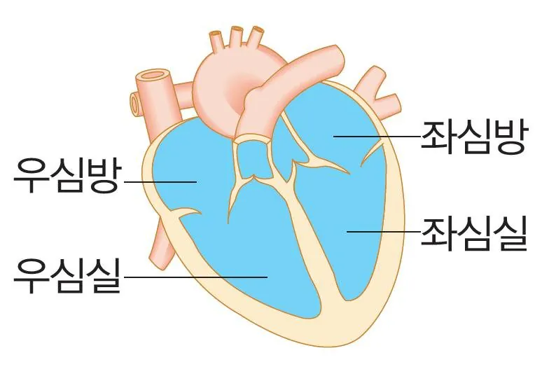
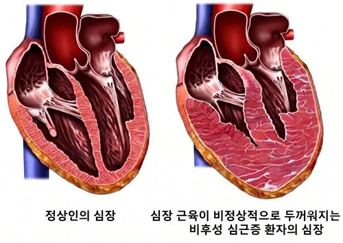

약을 맞으면 전신의 모든 근육이 늘어나는데
이게 그만 심장근육도 키워버림
문제는 심장근육은 밖으로만 자라는게 아니라 안으로도 자라버림...
즉 심방과 심실이 죄다... 꺄아아아아아아아악!!!!!


약을 맞으면 전신의 모든 근육이 늘어나는데
이게 그만 심장근육도 키워버림
문제는 심장근육은 밖으로만 자라는게 아니라 안으로도 자라버림...
즉 심방과 심실이 죄다... 꺄아아아아아아아악!!!!!
찾아보니까 진짜네 ㄷㄷ

염통이 아주 그냥 두접시는 더 나오게 되는거구나
내장근육도 비대해져서 배가 풍선처럼 부풀어오름
박승현도 이거 때문이었나
박승현은 정신질환도 있었을꺼임 그래서 안타깝지
으아 끔찍하다
부작용 없는 인공장기 같은거 나중에 발명되면 ㄹㅇ 3미터 넘는 괴물인간도 나올듯
스페이스머린으로 써먹음 되겠다
아씨 왜 쫄깃해보이지
ㄹㅇ 기름장 찍고싶네;
심장만 갈아끼면 노리스크라는 건가
그렇다면 스페어심장을 여러개 둬야겠구낭
진짜 뇌가 근육되엇냐라는게 심장은 진짜엿구나.
크레아틴은? 크레아틴은 수분채우는거라 괜찮은가
크레아틴은 영양제잖아
헉
바티스타 수술로 간다
그래서 유산소 운동을 졸라게 해서 심벽을 얇게 탄성있게 만들어야지
런닝 하면 종아리 근육 펌핑이 심해서 오래 못한다고 함
저거랑 관련 내용으로 운동법이있음
저심박수로 존나 오래 달려야됨
인공심장 달아야겠네
좌심방 비대 던데
카카로트 이 자식 로이더였냐??!!